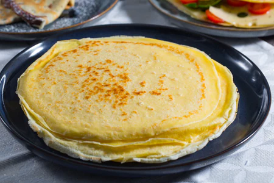

Crepes

Description
Ingredients
Dosi per 14 pezzi
- Uova medie 3
- Latte intero 500 g
- Farina 00 250 g
- Burro 40 g
Preparazione
-
Per preparare le crepe dolci
e salate iniziate sciogliendo dolcemente
il burro in un pentolino. Lasciatelo
intiepidire e nel frattempo rompete
le uova in una ciotola dai bordi alti.
Mescolate con una frusta e unite il
latte. Continuate a mescolare
sino ad ottenere un composto
omogeneo.
-
Aggiungete ora il burro tiepido
e mescolate ancora.
Posizionate un colino sul
recipiente e poi setacciate
la farina nella ciotola,
(per comodità potete anche aggiungerla
in due tempi e mescolare così da evitare
la formazione di grumi).
-
Poi con le fruste mescolate
energicamente per assorbire la farina.
Continuate a mescolare fino ad ottenere
un composto omogeneo, vellutato e privo
di grumi
-
A questo punto coprite la ciotola
con della pellicola alimentare e
lasciate riposare per almeno 30 minuti
in frigorifero.
-
Trascorso il tempo mescolate
l’impasto per farlo rinvenire e poi
scaldate una crepiera da 18 cm
(o in alternativa una padella antiaderente
sempre della stessa base) ed ungetela
con una noce di burro.
-
Una volta a temperatura versate un
mestolo di impasto sufficiente a ricoprire
la superficie della padella:
potete aiutarvi con l'apposito
stendi pastella per crepe oppure
ruotare la padella fino a distribuire
il composto uniformemente
(fate attenzione a non spanderlo
tutto sui bordi per evitare che al
centro non rimanga pastella sufficiente
a creare una crepe dalla superficie
uniforme); si consiglia di eseguire
queste operazioni molto in fretta,
poiché la pastella cuocerà
rapidamente
-
Trascorso circa 1 minuto a fuoco medio-basso,
dovreste notare una leggera doratura,
i bordi tenderanno a staccarsi perciò
potrete girare la prima crepe aiutandovi
con una paletta
-
Cuocete anche l'altro lato per 1 minuto circa,
aspettando che prenda colore. Una volta
cotta la prima, trasferitela su un piatto
da portata o su di un tagliere. Ripetete
questa operazione fino a finire l’impasto,
ungendo di volta in volta la crepiera,
dovreste ottenere così 14 crepe del diametro
di 18 cm: impilate ogni crepe una sopra
l’altra così resteranno morbide. Ecco pronte
le vostre crepe dolci e salate, non vi resta
che farcirle